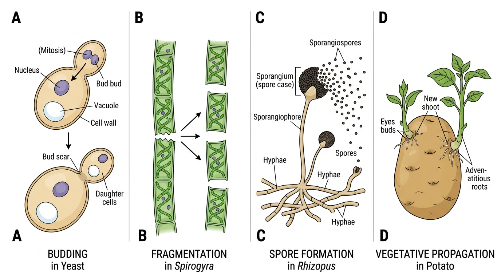
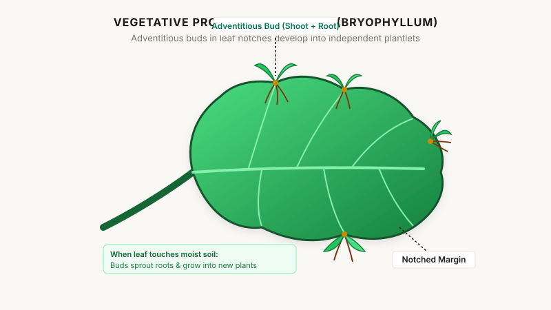
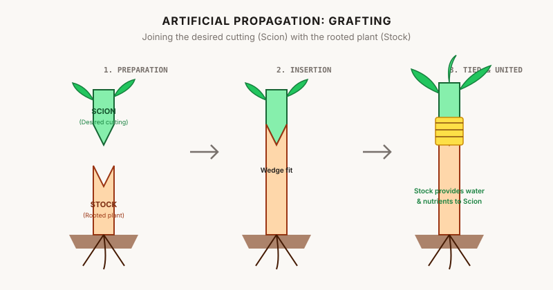
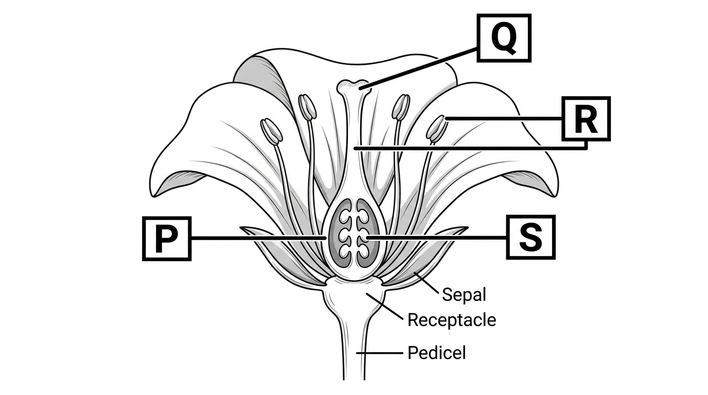
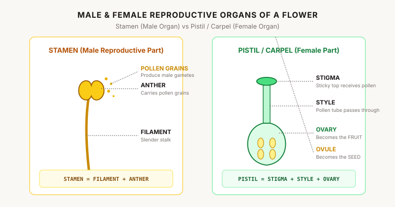
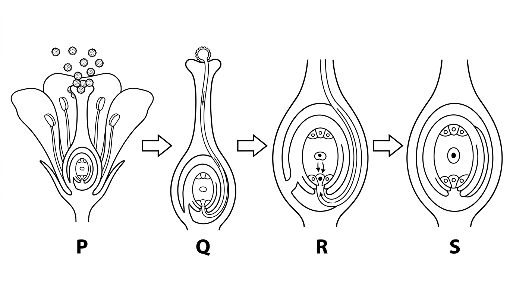
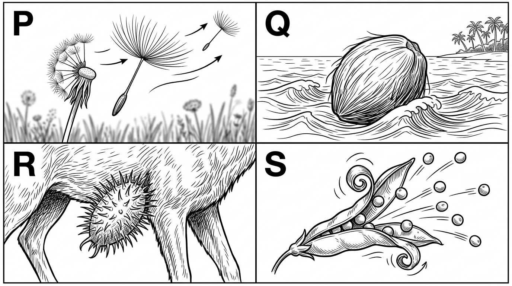
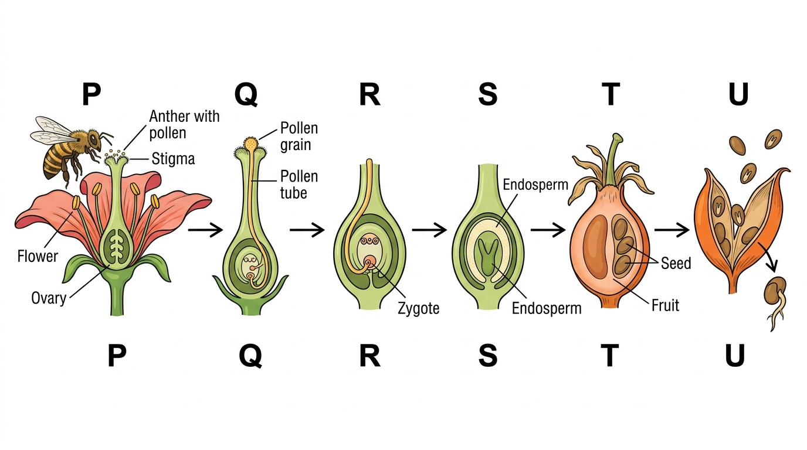

Reproduction in Plants
Complete Easy Notes · Pages 1–10 · Detailed · Exam Revision · Illustrated Diagrams
1. 🌱 What is Reproduction?
Reproduction is the process by which a living organism produces its offspring / new individuals.
Why is reproduction necessary?
Reproduction helps maintain the continuity of a species generation after generation.
Existing plants die → no new plants → number decreases → species may eventually disappear.
Two Major Modes in Plants
2. 🌿 Vegetative Parts vs Reproductive Parts
The main body parts of a flowering plant are categorized into two groups:
- Vegetative parts: Root, Stem, and Leaves.
- Reproductive part: The Flower.
Most plants grow from seeds. After maturing, plants produce flowers, which undergo reproduction to produce fruits containing seeds.
3. 🌱 Asexual Reproduction
In asexual reproduction:
- Only one parent organism is required.
- New plants are obtained without seeds.
- Offspring are genetically identical to the parent.

4. 🌱 Budding
In budding, a small bulb-like projection develops on the parent body called a bud.
The nucleus divides into two, and one daughter nucleus moves into the bud. The bud grows, matures, and eventually separates from the parent cell to live independently.
BUDDING = BUD (Primary example: Yeast). Under nutrient-rich conditions, yeast cells can form long chains of buds rapidly.
5. 🍞 Spore Formation
A spore is a tiny single-celled reproductive body covered by a thick, hard protective coating.
This protective coating helps spores survive extreme environmental conditions like high temperatures, drought, or lack of food. When favourable conditions return:
Protective coat breaks → Spore germinates → New fungal body develops.
⭐ Important Comparison: Budding vs Spore Formation
| Feature | Budding | Spore Formation |
|---|---|---|
| Mechanism | Bulb-like projection (bud) forms on parent | Microscopic thick-walled spores are formed |
| Primary Example | Yeast (unicellular fungus) | Rhizopus (Bread Mould), Mosses, Ferns |
| Separation / Growth | Bud detaches directly from parent cell | Spores disperse through air and germinate later |
6. 🍞 Activity: Observing Rhizopus
According to the NCERT chapter:
- Take a slice of stale bread and moisten it with water.
- Keep it in a warm, dark, moist enclosure for 2–3 days.
- A white, fluffy cotton-like growth appears across the surface.
- Under a microscope, this growth is confirmed as hyphae, sporangia, and germinating spores of Rhizopus.
❌ "The bread substance directly transforms into fungus cells."
✅ Airborne fungal spores landed on the bread, germinated, and fed on it saprophytically.
7. 🌿 Fragmentation
In filamentous green algae like Spirogyra, the body consists of long ribbon-like filaments.
When mature, the filament breaks into two or more pieces called fragments. Each fragment grows independently into a full-sized filament through repeated cell division.
FRAGMENTATION → FRAGMENTS (Algae: Spirogyra). Enables rapid green coverage of ponds and stagnant water bodies.
8. 🌱 Vegetative Propagation Overview
Vegetative propagation is the development of a new plant directly from a vegetative organ (root, stem, or leaf) without the involvement of seeds or flowers.
It can be Natural or Artificial.
Examples: Sugarcane, ginger, potato, rose, strawberry, jasmine, mint, turmeric, and Dahlia.
9. 🌿 Natural Vegetative Propagation: By Modified Roots
Certain plants develop swollen storage roots containing stored food reserves. When planted in moist soil, buds on these roots produce new shoots.
- Examples: Sweet potato, Dahlia, Asparagus.
10. 🥔 By Modified Underground Stems
Underground stems store food and bear dormant vegetative buds:
| Type of Stem | Structure | Examples |
|---|---|---|
| Tuber | Swollen underground stem with "eyes" (buds) | Potato |
| Rhizome | Horizontal underground stem with nodes & buds | Ginger, Turmeric |
| Bulb | Condensed stem surrounded by fleshy scale leaves | Onion, Garlic |
| Corm | Short, solid, swollen vertical stem base | Gladiolus, Colocasia |
11. 🍃 Vegetative Propagation by Leaves (Bryophyllum)
In Bryophyllum (Sprout Leaf Plant), specialized adventitious buds are situated along the notched margins of the fleshy leaf.
When a detached leaf falls onto moist soil, each marginal bud sprouts tiny roots and a shoot, developing into an independent plantlet.

12. 🌿 Vegetative Propagation by Aerial Stems & Runners
In plants like wild strawberry and doob grass (lawn grass), slender horizontal branches (runners/stolons) grow across the soil surface. At regular nodes, they strike roots into the soil and shoot upward, establishing new plants.
13. 🧑🌾 Artificial Vegetative Propagation
Horticultural techniques developed by humans to multiply desired plant varieties rapidly:
14. ✂️ Stem Cutting
A healthy piece of stem bearing at least one or two axillary leaf buds (nodes) is cut and planted into moist soil. After a few days, adventitious roots sprout from the buried node and new leaves emerge.
- Examples: Rose, Bougainvillea, Sugarcane, Cactus, China rose.
15. 🌱 Layering
A flexible lower branch of the parent plant is bent down, pegged, and covered with moist soil while remaining attached to the parent. Once roots establish, the branch is severed from the mother plant.
- Examples: Jasmine, Grapes, Bougainvillea.
16. 🌳 Grafting (Scion + Stock)
Grafting joins the vascular tissues of two separate plants:
- SCION: The stem cutting taken from the desired, superior fruit/flower plant.
- STOCK: The strong, disease-resistant rooted plant that absorbs water and minerals.

17. 🧫 Plant Tissue Culture (Micropropagation)
A modern laboratory method where miniature plant tissues are cultured under sterile conditions:
- Explant: Tiny piece of tissue removed from growing shoot tip.
- Nutrient Medium: Jelly containing sugars, vitamins, and plant hormones.
- Callus: Undifferentiated mass of dividing cells.
- Plantlets: Hormones induce shoots and roots.
- Soil: Plantlets hardened and planted in nursery beds.

Examples: Orchids, Chrysanthemums, Asparagus, ornamental plants.
18. ✅ Advantages of Vegetative Propagation
- G — Genetically Identical: Exact clonal copies preserve desirable traits.
- E — Earlier Flowers/Fruits: Mature faster than seed-grown plants.
- U — Useful for Seedless Varieties: Propagates bananas, seedless grapes, sugarcane.
- E — Economical & Rapid: Fast and high success rate.
19. ❌ Disadvantages of Vegetative Propagation
- No Genetic Variation: Offspring are identical clones; no evolution or adaptation.
- Overcrowding: Dense clusters lead to intense local competition.
- Disease Vulnerability: If a pathogen affects the mother plant, all clonal offspring will succumb.
20. 🌸 Sexual Reproduction
Sexual reproduction involves the fusion of male gametes (from pollen) and female gametes (egg in ovule) to produce a zygote, which develops into a seed containing an embryo.
21. 🌸 Flower Types: Unisexual vs Bisexual
| Category | Definition | Examples |
|---|---|---|
| Unisexual Flower | Contains only one reproductive organ (either Stamen or Pistil) | Papaya, Corn, Cucumber, Watermelon |
| Bisexual Flower | Contains both male (Stamen) and female (Pistil) organs | Rose, Mustard, Hibiscus, Petunia, Pea |
22–24. 🌼 Flower Anatomy: Stamen & Pistil
The flower is the reproductive shoot of an angiosperm plant containing 4 concentric whorls: Sepals (Calyx), Petals (Corolla), Stamens (Androecium), and Pistil/Carpel (Gynoecium).


25–27. 🌼 Pollination: Self vs Cross
Pollination is the mechanical transfer of pollen grains from the anther to the receptive stigma.
| Type | Condition | Technical Term |
|---|---|---|
| Self-Pollination | Transfer within same flower OR between two flowers on the same plant | Autogamy |
| Cross-Pollination | Transfer between flowers on two different plants of the same species | Allogamy |
28–30. 🐝 Pollination Adaptations: Insect, Wind, Water
| Pollination Agent | Floral Adaptations | Examples |
|---|---|---|
| Insect (Entomophily) | Bright petals, fragrant scent, sweet nectar, sticky pollen grains | Sweet pea, Rose, Orchid, Buttercup |
| Wind (Anemophily) | Small inconspicuous petals, no nectar/scent, huge quantities of light dry pollen, feathery stigmas | Maize, Wheat, Rice, Grasses |
| Water (Hydrophily) | Aquatic habitat, pollen grains with mucilaginous waterproof coats | Vallisneria, Hydrilla, Zostera |
31. 🧬 Fertilisation: The Complete Sequence
Fertilisation is the fusion of the male gamete with the female egg cell inside the ovule.

32–33. 🍎 Post-Fertilisation Changes in Flowers
After fertilisation, petals, sepals, stamens, style, and stigma wither and drop off. The ovary remains and transforms:
| Flower Structure (Before) | Transforms into (After Fertilisation) |
|---|---|
| Ovary | FRUIT (Ripened ovary wall = Pericarp) |
| Fertilised Ovule | SEED (Ovule coat = Testa/Seed Coat) |
| Zygote | EMBRYO (Baby plant with Cotyledons) |
| Petals, Stamens, Style, Stigma | Wither, dry up, and fall off |
34–38. 🌱 Seed Dispersal Mechanisms
Seed dispersal prevents overcrowding, eliminates localized resource competition for sunlight, water, and soil minerals, and enables species expansion into new habitats.

| Agent | Adaptation Feature | Key Plant Examples |
|---|---|---|
| Wind | Lightweight, winged extensions, tufts of silky pappus hairs | Dandelion, Cotton, Drumstick, Maple (Acer) |
| Water | Spongy, fibrous buoyant outer coat that floats | Coconut, Lotus, Water Lily |
| Animals | Hooks, spines, stiff barbs (clings to fur) OR juicy edible pulp | Xanthium, Urena, Tribulus, Guava, Tomato, Mango |
| Explosive Bursting | Tension builds up in drying pericarp; suddenly splits with jerking force | Pea, Castor, Balsam, Ladyfinger |
39. 🧠 Complete Lifecycle Flowchart

40. 🔥 Rapid 1-Minute Exam Checklist
🎯 Top 9 High-Frequency Exam Facts:
- Asexual: 1 parent, no seeds, identical clones.
- Yeast: Reproduces by Budding.
- Rhizopus (Bread Mould): Reproduces by Spore Formation.
- Spirogyra (Algae): Reproduces by Fragmentation.
- Bryophyllum: Propagates via Leaf margin adventitious buds.
- Grafting: Scion (desired stem) + Stock (rooted plant).
- Stamen (Male): Filament + Anther (produces pollen).
- Pistil (Female): Stigma + Style + Ovary (contains ovules).
- Transformation:
Ovary → Fruit|Ovule → Seed|Zygote → Embryo.